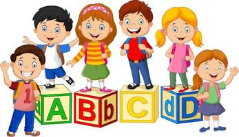

Welcome to our College web site!
Early childhood education refers to the educational programs and experiences designed for children from birth to around eight. These programs stimulate children's cognitive, social, and emotional development through play-based learning and age-appropriate activities.
During the early years, children experience rapid brain development, forming neural connections at an astounding pace. This period is crucial for developing cognitive abilities, language skills, and social-emotional competencies. Quality early childhood education programs provide stimulating environments and activities supporting this crucial brain development phase.